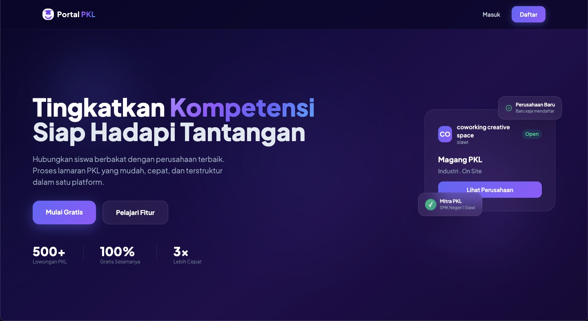
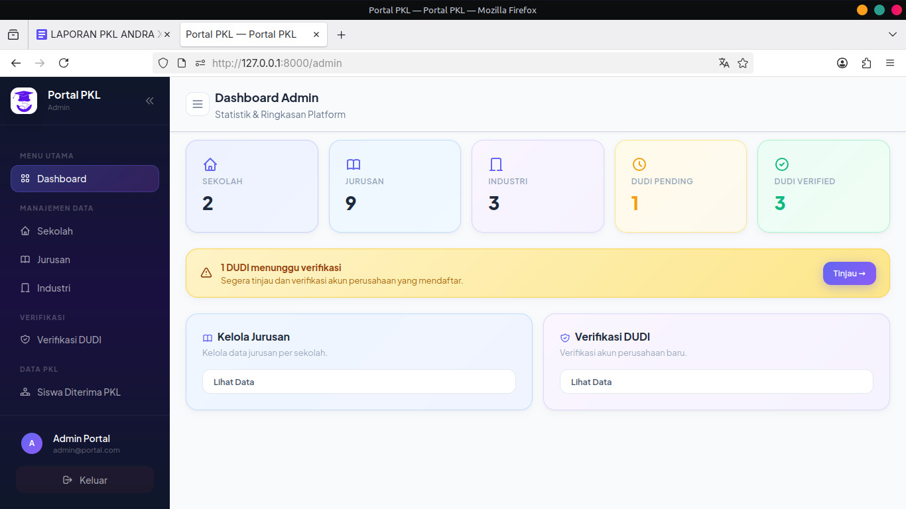
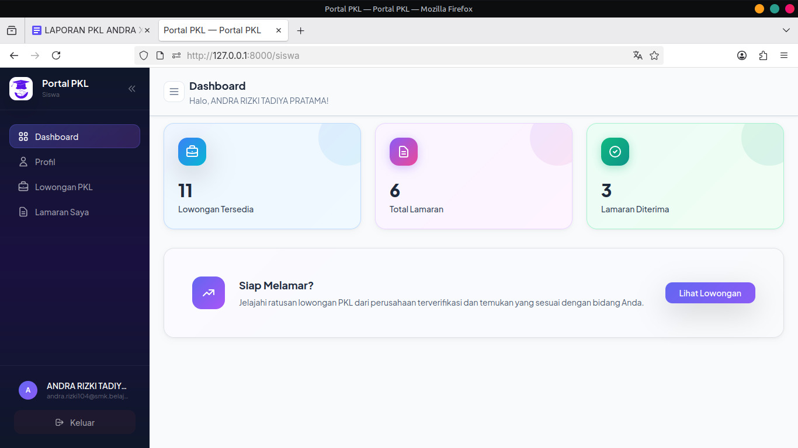
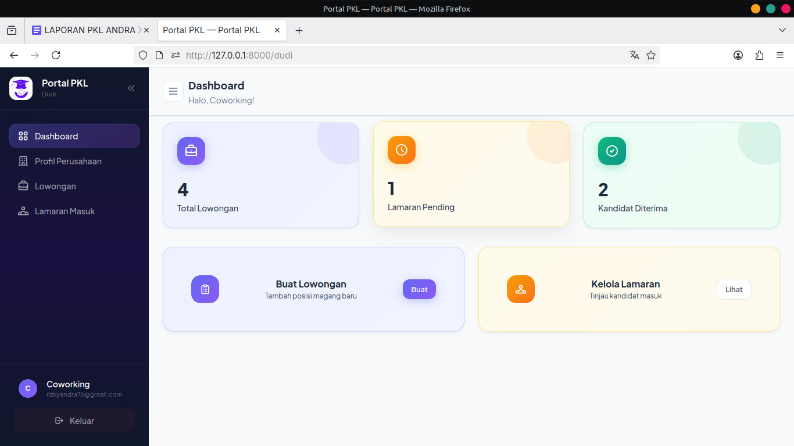

Website Pencarian & Pengajuan PKL Siswa SMK
Masalah:
Pencarian tempat PKL manual menyulitkan siswa memantau lamaran.
Solusi:
Portal web terpadu dengan formulir lamaran online dan sistem persetujuan
Peran Saya:
Frontend Developer & Database Designer.